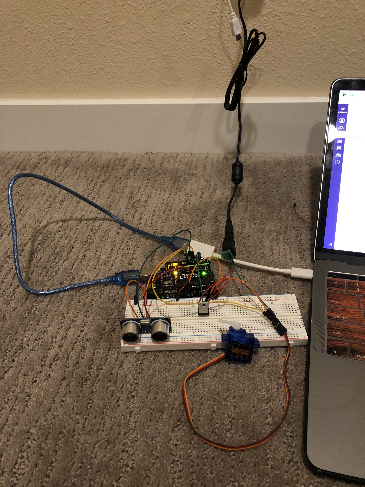

A5: Talking to the web!
This is the shortest circuit I've ever built. Haha. To build this circuit, I use a joystick, arduino, and a power source, which is my laptop. This circuit is very similar to example 2 we built in class. I just change a little and comment out some information to clarify it.
Here is my schematic: 
The firmware (as a code snippet):

My circuit and the operation: